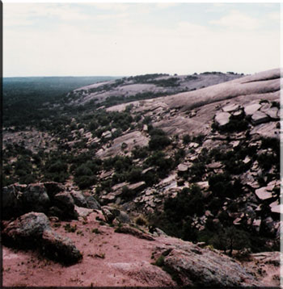

|
 |
Back Door To
Enchanted Rock
By g.l. bass (the ghostbear still lives)
5/86 ed. 4/05
for jeanie
Atop the granite dome,
You turn to me,
“Why do you always
Take us through
The back door?”
Your eyes flash,
A glint of lightening
In your heart.
Over the ledge
We watch two scout leaders
And a group of boys-
Ropes, gear, and tie-downs,
Struggling up 70 degree
Slide of steep granite rock-
“Shall I tell them
We came up the backdoor
With just our hands,
Boots and a fools
Love for adventure?”
Tears still wet in
Your lightening eyes,
“You always prove I can do
More than I thought-
God, what you make go through.
That’s why I love-I think.”
From miles away,
As we found twists and turns
In the country road,
We could see the dome.
Hundreds of acres,
Granite explosion
Out of the belly
Of ancient earth,
Pushed up,
Forced out,
A volcanic catastrophe,
Jagged juts crushed up
Out of, through,
Limestone hills,
A billion years ago.
The hand of an earthquake,
A ruptured volcano,
When the land
Of Dinosaur paradise
Turned into roaring,
Flaming molten madness.
Now,
Thousands of feet above
The county road,
Domes and monoliths
Point their rugged,
Sharp-angular,
Muscles
Skyward.
Here,
Would be a day
We would escape
The city’s voice,
And learn once again,
The place of wild places
In the hearts of lovers,
And the souls of men.
Cameras, gloves,
Glasses, hats and gear,
We debate the journey and plan,
In finger traces over maps,
We decide on following
Sandy Creek,
A washed-out bed of
Granular, granite sand.
Round, down, up and over,
Unmarked “access” trails,
For four hours we dared
Steal a hiker’s find,
Where most and the usual
Would rarely climb.
We stop only for pictures,
Precious blooms-
Yellow cactus blossoms,
Blue, red, and translucent orange
Tiny crevice flowers,
Hidden amongst
Pale-green fragile foliage.
We find,
Like those plants and vines,
Cracks and ledges,
Footholds and finger-grabs,
Where rock breaks,
And granite slants,
Up the sheer side
Of Turkey Peak-
How many times
Did you say,
“I can’t go up that way!”
On this day,
We would discover-
Just as we have
In past adventures,
Made only for lovers-
Hand-to-hand,
There’s always another
Strength we’ve yet to find,
Always another way
To overcome,
Another way for
Life to climb.
Down the backside,
Across the hard-rock floor,
Up Freshman Mountain,
On the way to Buzzard’s Roost,
We marvel at pools of planted
Gardens,
As if someone had planned
And placed them there by hand.
These patches of landscape
Atop the mile –thick,
Granite eruption of the land.
We scramble atop monoliths,
Weathered, carved by rain,
Balanced on the edge of a fault,
Men have attempted to describe
Them by “attachments” and names.
We laugh at their folly
And continue on up again.
A stream trickles down
The steep, sheer side,
Of Enchanted Rock.
Your throat,
Hard-rock, dust-dry,
“We can’t get all the way up.
We can only climb so high.”
Along edges and ledges,
We scurry across angles
Of slant rough slide.
We climb to a small
Crawl space,
Out-cropped from the granite
Side.
Tears in your eyes,
You warn,
“Darn you.
I’m sure
We can’t go up anymore.”
Across the tightrope ledge,
“I’m scared to death,
I can’t do this…..”
We struggle along a crevice
Where hawks, turkey vultures,
And Buzzards have deposited
Cleaned bones of devoured prey.
We save pieces of crystal
As precious “attributes” of
Our struggles on this day.
Once atop Enchanted Rock,
We lay flat-backed and watch
The Vultures glide and soar
Below us.
“You okay?”
Your answers lost
Down the side
Thousands of feet
Down the slide.
“You’re a bastard.
But I love you anyway.
I’m thirsty.
Is there water
Down the other side?”
A laugh and a kiss
Are my only reply.
On this day,
The back door
To Enchanted Rock
Has been a treasure
We shall not attempt
To measure.
We’ve discovered
Yet another meaning
To who we are,
And what our love is for.
We turn back,
Snap pictures of
Where we’ve climbed,
What we’ve found,
What we’ve left behind.
Just as always,
In this love of ours,
Strength and struggle
Prove just as much
What’s within us,
As what’s between us.
We thank God
For the “beauty of this place.”
And at the end,
On our way down,
We find
Much easier,
The way
Home.
|